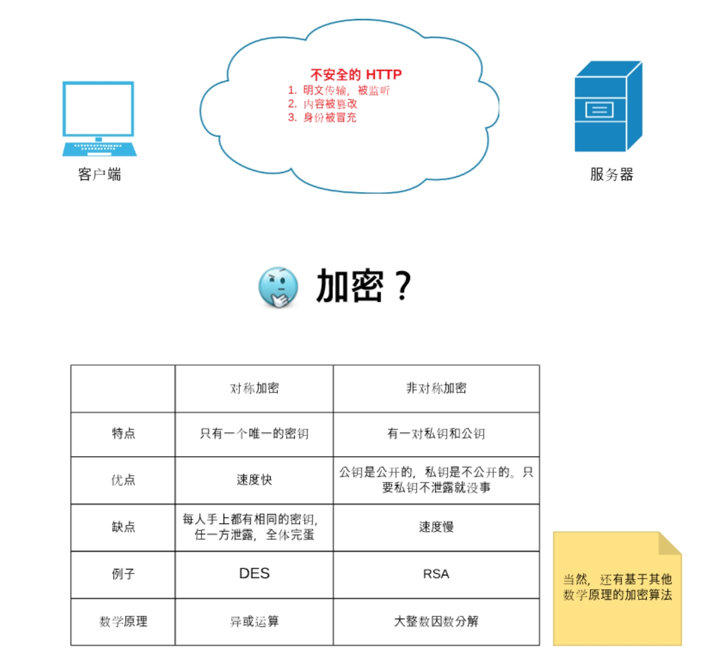
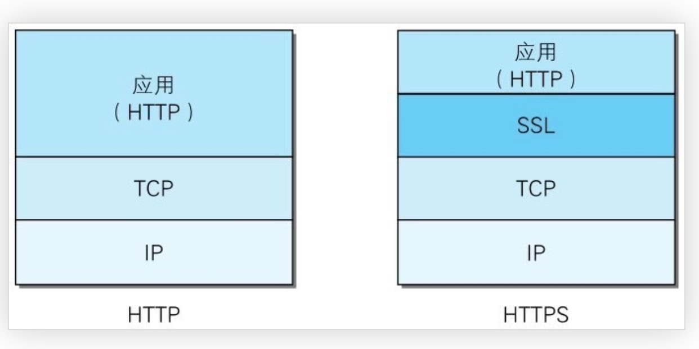
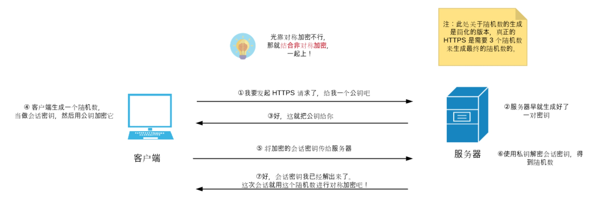
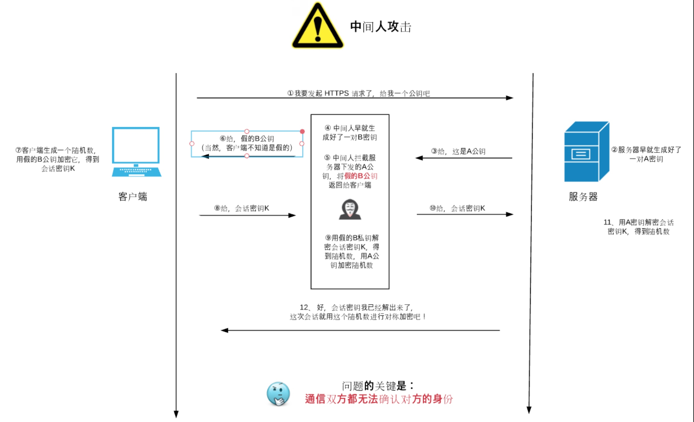
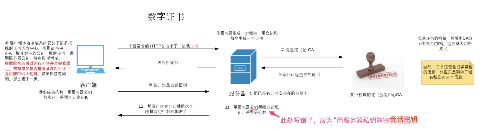
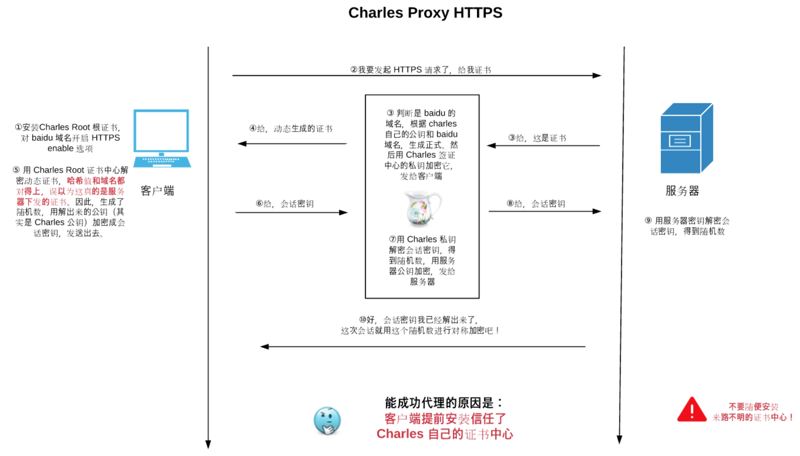

HTTPS 以及抓包工具抓取 HTTPS的原理
什么是 HTTPS?
HTTP:超文本传输协议,是属于 TCP/IP 分层中的应用层,位于传输层之上,当初为了快速处理大量事务,HTTP 在设计之初就比较简单,安全性奇差无比,明文传输.
HTTP 的报文直接丢给传输层,利用传输层的 TCP 协议 或者 UDP 协议进行数据传输,然后再利用网络层的 IP 协议和数据链路层来进行最终的数据包传输.
HTTP 数据传输不会做数据的加密,不会验证通讯双方的身份,也不会校验报文的完整性,这样会导致以下的问题:
- 由于通信报文是明文传输,内容很容易就被窃听.
- 由于不验证通信双方身份,,很容遭遇伪装,服务器也更容易遭受 Dos 攻击
- 不验证报文完整性,可能会出现篡改报文信息的情况

由于 HTTP 的诸多弊端,现在通讯基本都要要求 HTTPS 通讯了.
HTTP+加密+认证+完整性保护= HTTPS
HTTPS 中的 S 是指 SSL/TSL安全协议.
简单说一下 SSL/TSL 协议:
SSL:Secure Socket Layer,安全套接层
TSL:Transport Layer Security 传输层安全
SSL/TLS 解决了:
- 机密性问题
- 完整性问题
- 认证问题
有关于 SSL/TSL 的具体介绍,参考这篇文章
HTTPS 的分层结构图

- 对于报文的加密:有对称加密和非对称加密方式,HTTPS 采用的混合加密机制,在交换密钥环节,使用非对称加密,之后通信交换报文阶段则使用对称加密方式.
- 对于验证通信双方的身份:使用 CA 证书来校验
- SSL 协议具有完整性的校验
HTTPS 的大致流程:
- 客户端将自己支持的加密算法发送给服务器,请求服务器证书
- 服务器选取一组加密算法,并将证书返回给客户端
- 客户端校验证书合法性,生成随机对称密钥,用公钥加密后发送给服务器
- 服务器用私钥解密出对称密钥,返回一个响应,HTTPS 连接建立完成
- 随后双方通过这个对称密钥进行安全的数据通信

Charles 抓包原理 & 中间人攻击
其实使用 HTTPS 的一般来说是比较安全的,但是为什么 Charles 能做到抓取 HTTPS 的呢?这就涉及到了中间人攻击,先来张图说明一下什么是中间人攻击


Charles 之所以能抓取到 HTTPS 的,是因为我们信任了 Charles 的证书

简单总结就是:
- 首先 Charles 假冒了客户端,拿到服务器的 CA 证书
- 然后 Charles 假冒了服务器,给客户端发了一张自己制作的证书,客户端信任该证书
- Charles 再次假冒服务器,拿到客户端的对称密钥
- Charles 再次假冒客户端,将对称密钥发送给服务器,让服务器认为这次通信是没问题的,服务器发送成功响应
- 最后Charles假冒服务器将成功响应发送给客户端
- 最后客户端也Charles建立连接,Charles与服务器建立连接(中间人攻击)
Copyright © 2015 Powered by MWeb, Theme used GitHub CSS.